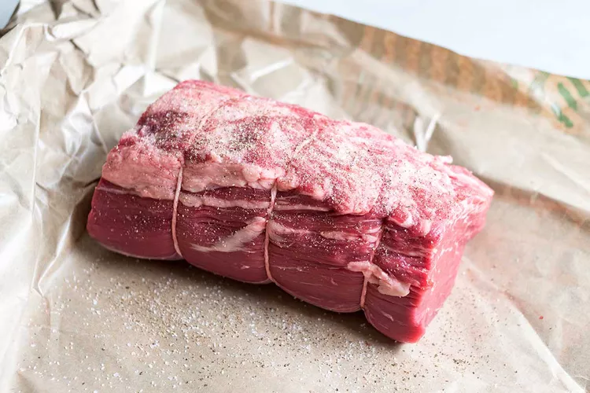
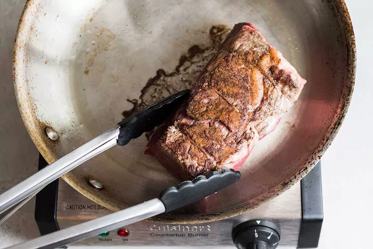
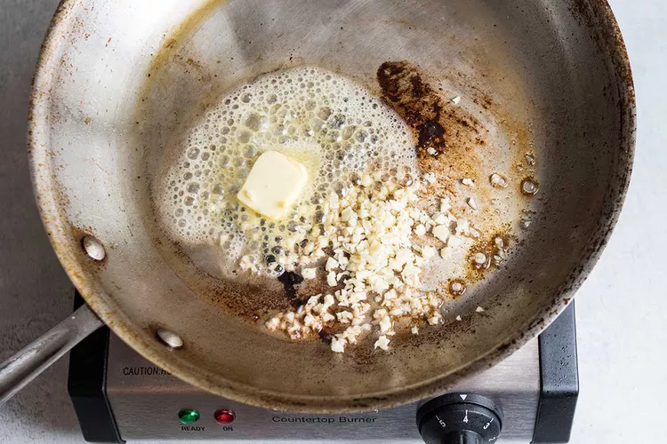
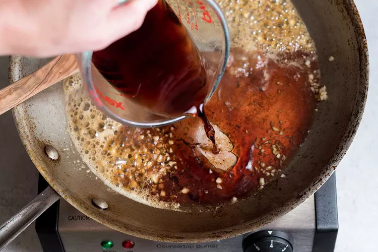
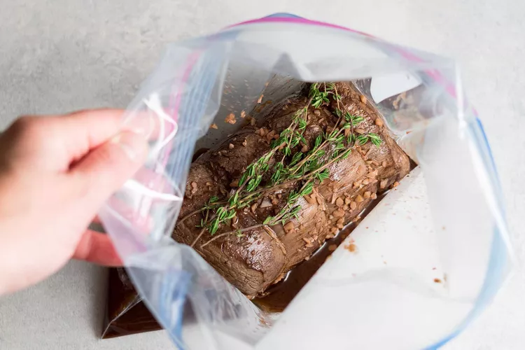
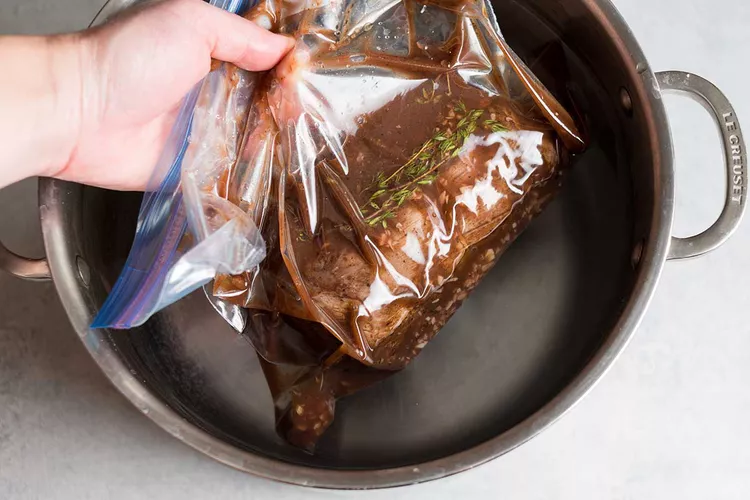
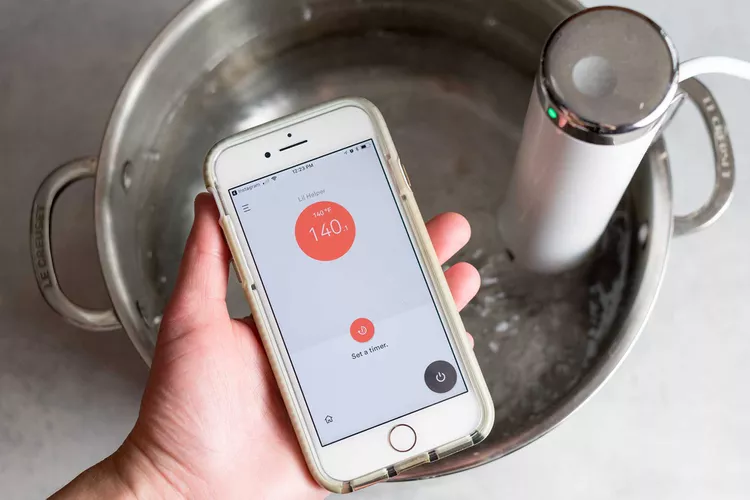
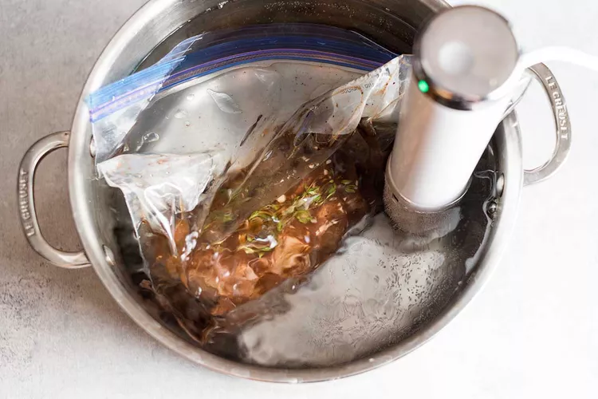
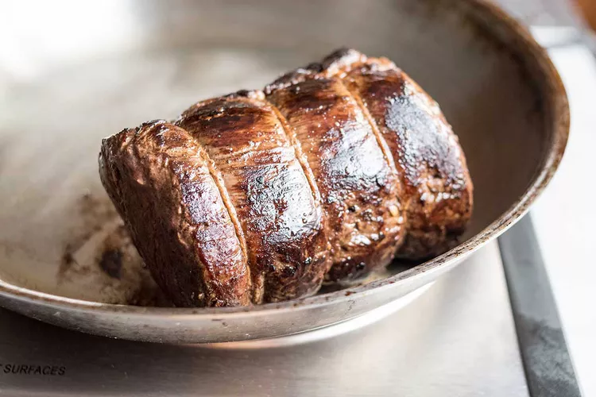
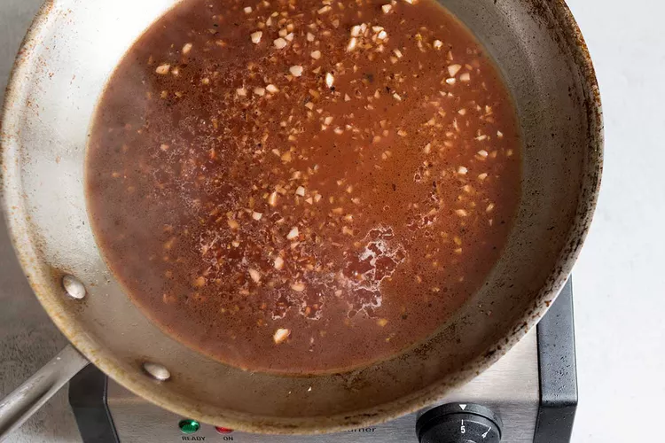

I have always considered beef tenderloin a "high stress" meal and given it a wide berth. This is an expensive cut of meat—it's not one that you want to mess up by trusting an untrustworthy recipe or forgetting to set a timer.
Add to this, roast beef tenderloin most often appears on menus around the holidays. I've never quite been able to overcome the terrifying possibility of ruining both a wage-devouring cut of meat and Christmas dinner.
Sprinkle the tenderloin with salt and a generous amount of pepper. Heat 1 tablespoon of oil in a 10-inch skillet over medium-high heat. When the pan is hot enough, a drop of water should sizzle and quickly evaporate on contact.
Sear the tenderloin in the pan until it's dark brown all over, 1 to 2 minutes on each side and both ends. Transfer to a plate or cutting board and allow to cool slightly.
While the pan is still hot, add the butter and garlic. Cook until the garlic is golden and fragrant, 30 to 60 seconds.
Add the Port wine and use a stiff spatula to scrape up any browned bits from the bottom of the pan. Let the wine come to a simmer, then remove from heat.
Make sure the tenderloin and sauce are no longer steaming. It's fine if they are still quite warm, but they can melt through the bag if they're still steaming hot.
Place a gallon-sized zip-top freezer bag on your counter and flip the zip-top edge outward, forming a cuff around the bag. This helps the bag stay open and upright as you fill it.
Transfer the tenderloin to the bag and pour the sauce over top. Lay 5 or 6 sprigs of thyme over the top of the tenderloin.
Fill a stock pot with 5 or 6 inches of water. Slowly submerge the tenderloin in the water, using your hands to help push out all the air from the bag as you go. When you reach the top of the bag, zip it closed.
Lift the tenderloin out of the water and place it on a towel while you heat the water for the sous vide.
Place your Joule or other sous vide immersion circulator in the stockpot of water. Set the sous vide immersion circulator to heat the water to 133°F for rare beef, 140°F for medium-rare (my preference), 149°F for medium-well, or 167°F for well-done.
When the water has heated to its required temperature, lower the tenderloin into the water so that it is entirely submerged. It's ok if the top of the bag pokes out of the water as long as the tenderloin itself is submerged.
Cook for 2 1/2 to 3 hours, but avoid cooking for much longer or the beef will start to get a little soft and mushy.
When the tenderloin is done, lift it from the water and place the bag on a kitchen towel. Heat the remaining tablespoon of oil in the skillet over medium-high heat until a drop of water sizzles and evaporates on contact.
Use tongs to lift the roast from the bag and transfer it to the skillet. Be careful—it will sputter! Sear for 30 to 60 seconds on all sides, until the outside is even more deeply browned and a crust has formed.
Transfer the tenderloin to a cutting board and rest for 5 to 10 minutes.
With the pan still over medium-high heat, pour in the sauce directly from the bag into the pan (discard the sprigs of thyme). Simmer for about a minute and scrape up any browned bits stuck to the bottom of the pan. Carefully transfer the sauce to a serving cup.
Cut through the twine and discard. Slice the tenderloin either into thick "filet mignon" steaks (one steak per person), or into thinner "roast beef" slices (3 or 4 slices per person). Serve immediately with the sauce.